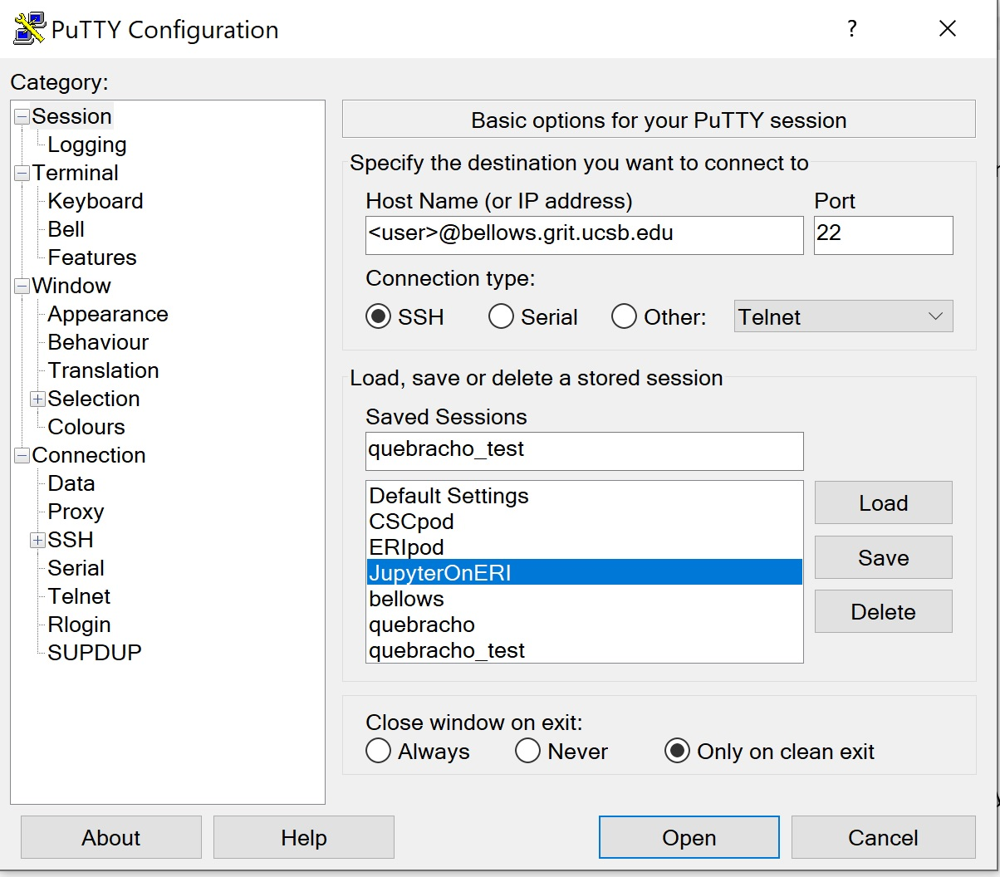
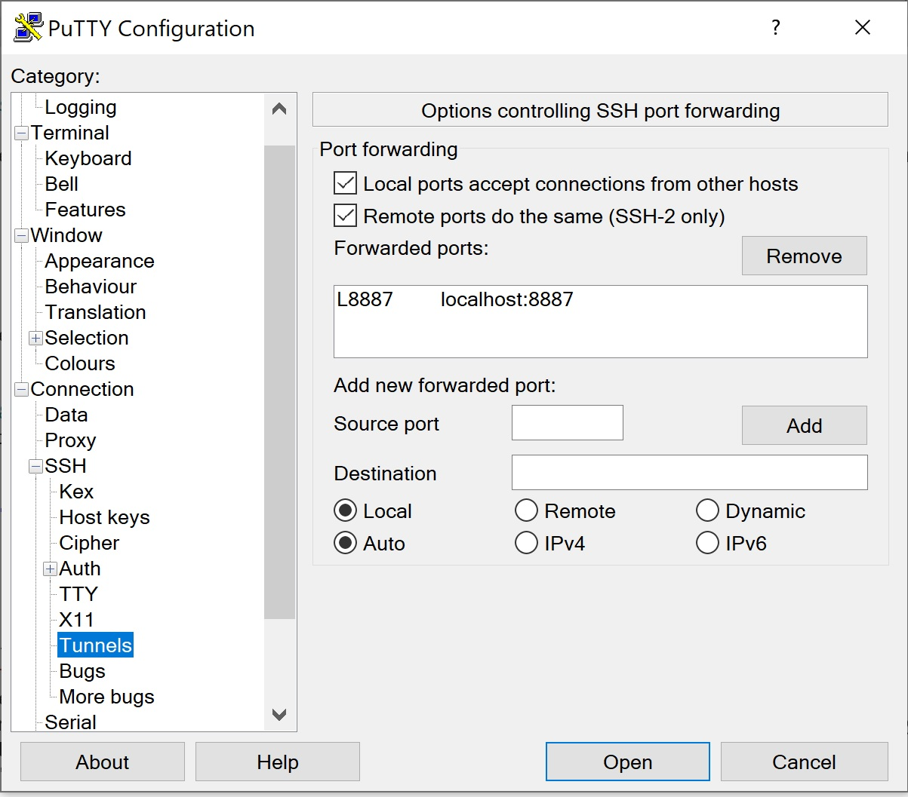

Using Jupyter Notebook to interact with data on cluster¶
================================================================================================================================
Jupyter notebooks provide a platform to create and share documents that contain live code, equations, visualizations, and text. via Jupyter notebook, you can visualize and analyze data straight on the cluster without needing to tansfer files or install new code.
Warning
Jupyter Notebook allows you to run code directly on the cluster without running through SLURM. This means that SLURM cannot account for your memory use when allocating other jobs – PLEASE BE MINDFUL OF THIS and do not run jobs > 1-2 cores via Jupyter.
Install Jupyter notebooks on cluster¶
From any node on the cluster (i.e. bellows/quebracho), create a folder in your home directory to house your Jupyter notebooks (e.g. mkdir ~/Jupyter)
You can clone the LUCinSA_helper repo here or you can make your own after connecting to Jupyter.
Install Jupyter Notebook into your base environment on the cluster:
conda install -c conda-forge notebook
conda install -c conda-forge nb_conda_kernels
optional: install extentions – see here for more on Jupyter extentions
conda install -c conda-forge jupyter_contrib_nbextensions
Next install a jupyter kernel into each virutal environment that you plan to run in Jupyter (this will allow you to switch between kernels within your notebook).
conda activate venv.lucinla38_dl
conda install -c conda-forge notebook
conda install ipykernel
Warning
It is highly recommended that you run Jupyter from a virtual environment and not your base environment
If you do not have a virtual environment, create one. e.g.:
conda create --name venv.lucinla38_jupyter python=3.8 pip ipykernel notebook
See here for details on setting up your virtual environment.
Connect to cluster via ssh with tunnel to port for Jupyter¶
If using PuTTY:
To connect to Jupyter via PuTTY: |
|
|---|---|
 |
 |
1) on first PuTTY screen, enter SSH address to node as normal |
2) click |
Note
To use jupyter on quebracho, just replace bellows with quebracho in the first ssh command
Go back to session and save session with name (e.g. JupyterOnERI here) for future use
Click “Open” to open the connection and enter password as normal.
Activate your virtual environment that has Jupyter installed on it (i.e:
conda activate venv.lucinla38_jupyter)At next prompt, enter:
jupyter notebook --no-browser --port=<port>(using the port number from step 2 of your SSH connection)Leave this window running and open a browser from your computer and enter into the address bar:
http://localhost:<port>/You should now see a Jupter tree of your home directory on the cluster. Navigate to the notebook you want to use.
(you can create a permanant password by entering jupyter notebook password at the prompt after activating a virtual environment with Jupyter installed, before entering the notebook)